Aplankykite ir pamatykite viską Šiauliuose
Sveiki atvykę į virtualios kelionės gidą, kurį naudodami galite drąsiai bei savarankiškai keliauti po Šiaulius ir išgirsti trumpus pasakojimus apie lankytinas vietas.
Dažniausiai lankomi objektai
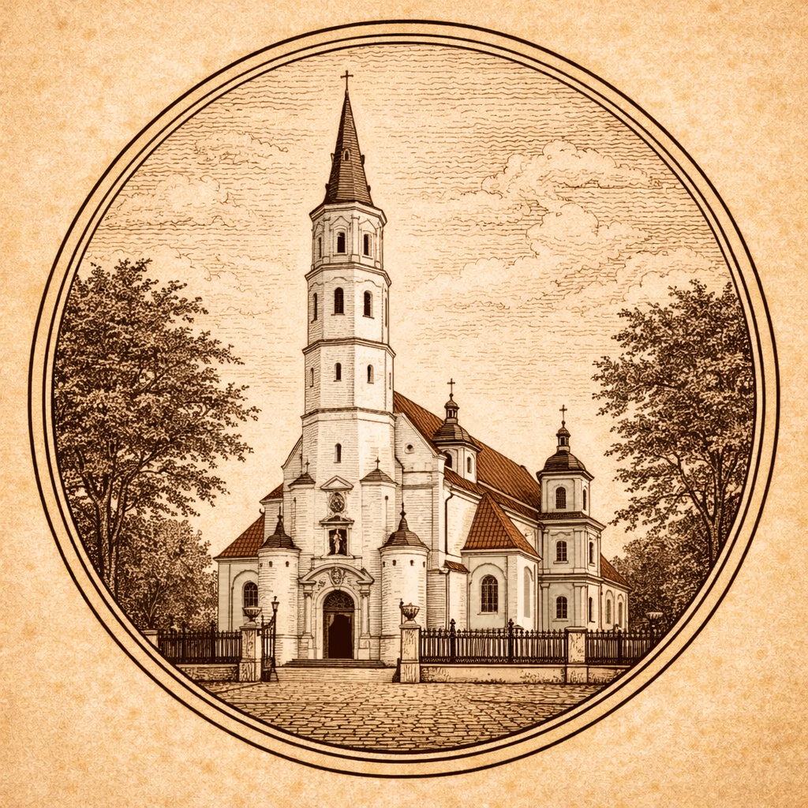
Šv. Apaštalų Petro ir Pauliaus katedra
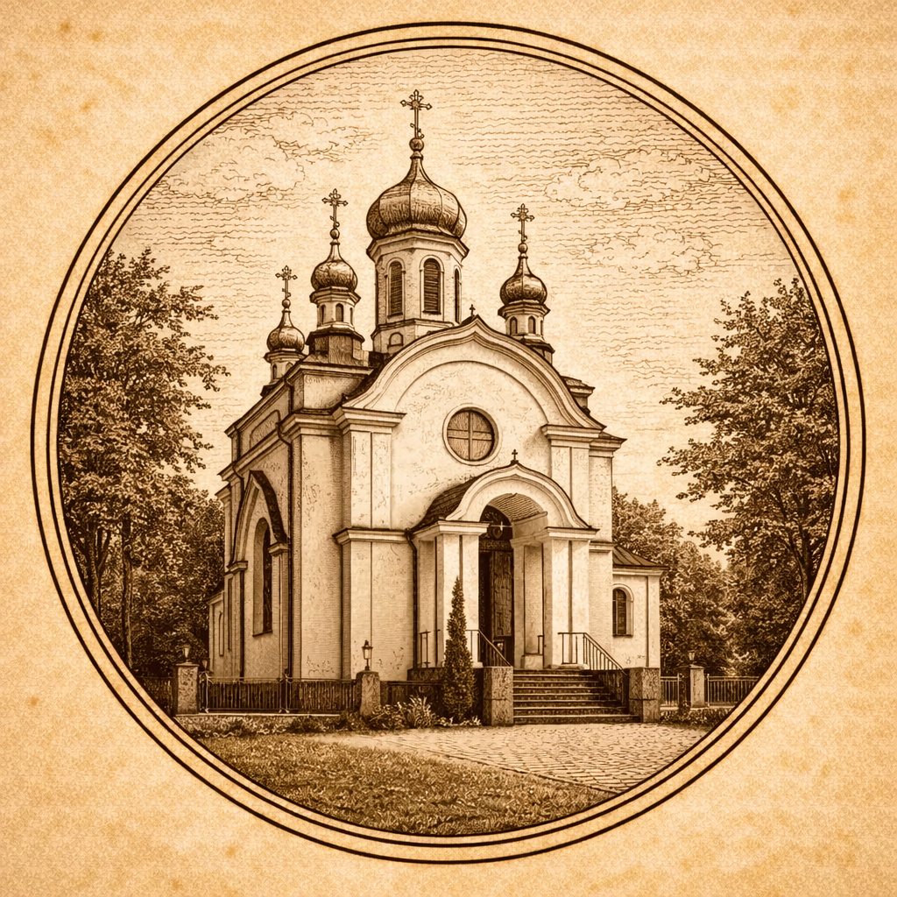
Šiaulių Šv. Apaštalų Petro ir Povilo cerkvė
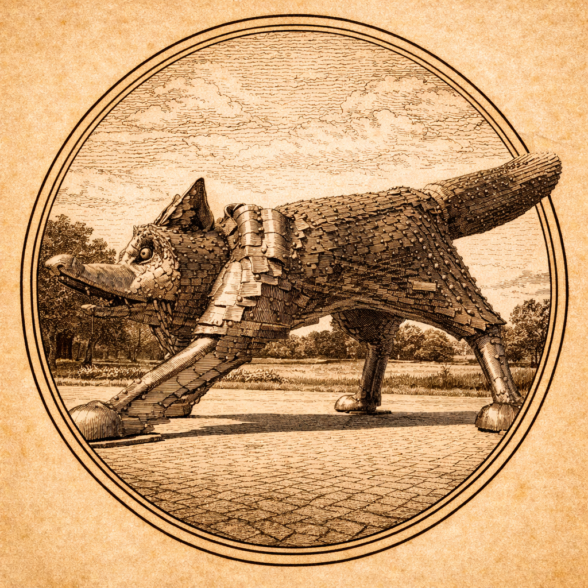
Geležinė lapė
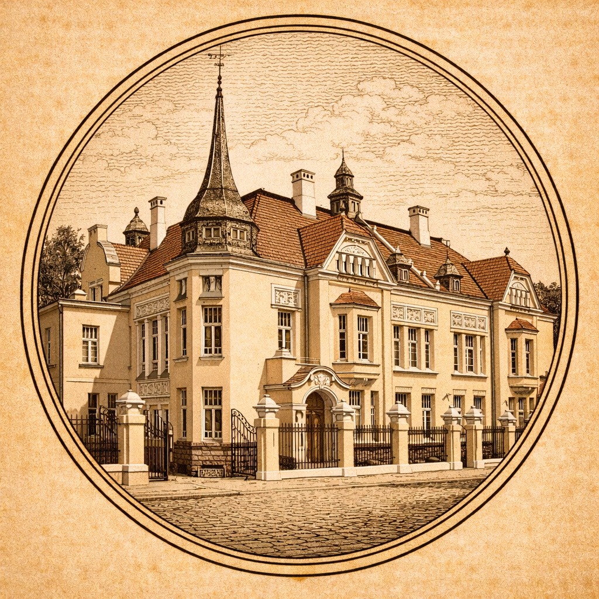
Chaimo Frenkelio vila-muziejus
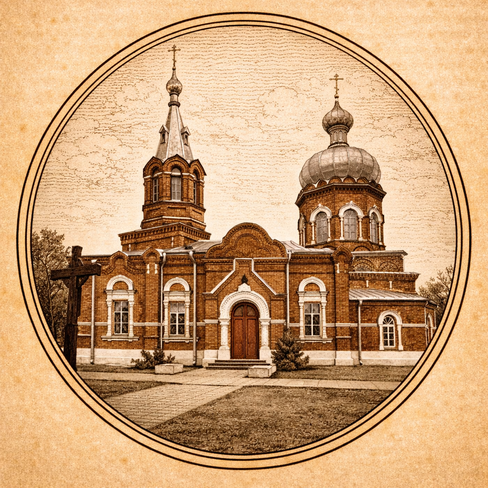
Šiaulių Šv. Jurgio bažnyčia
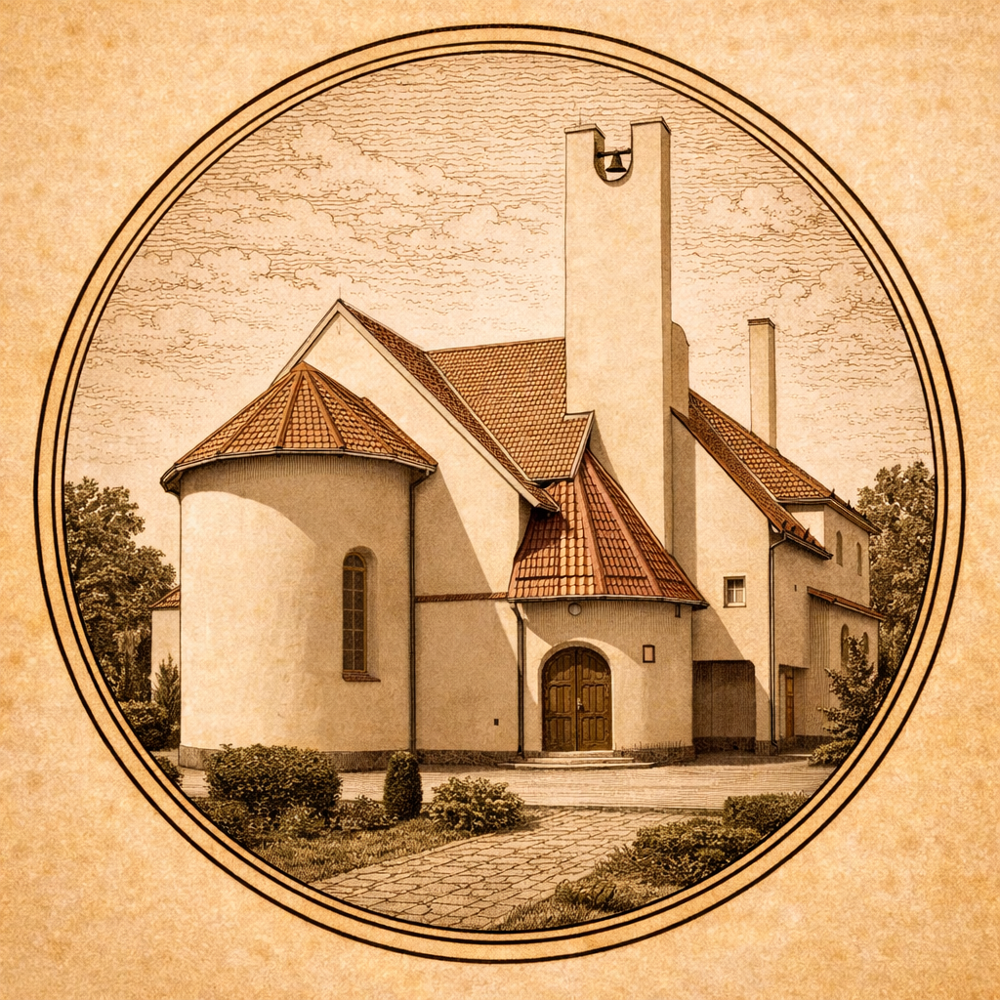
Šiaulių Šv. Ignaco Lojolos bažnyčia
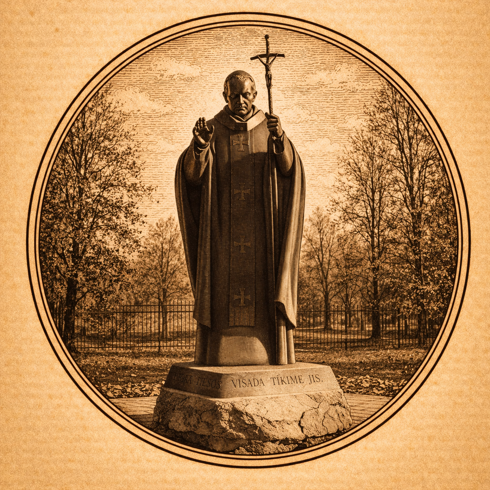
Paminklas popiežiui Jonui Pauliui II
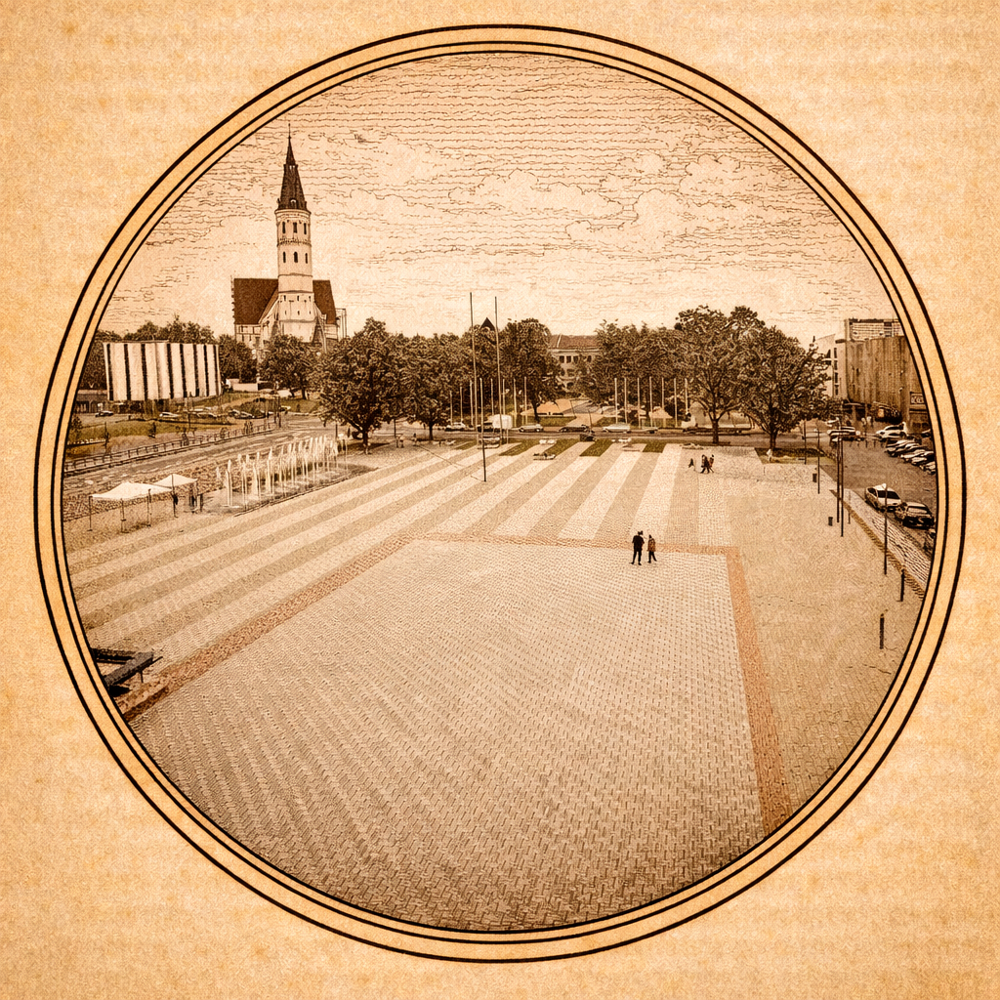
Turgaus aikštė
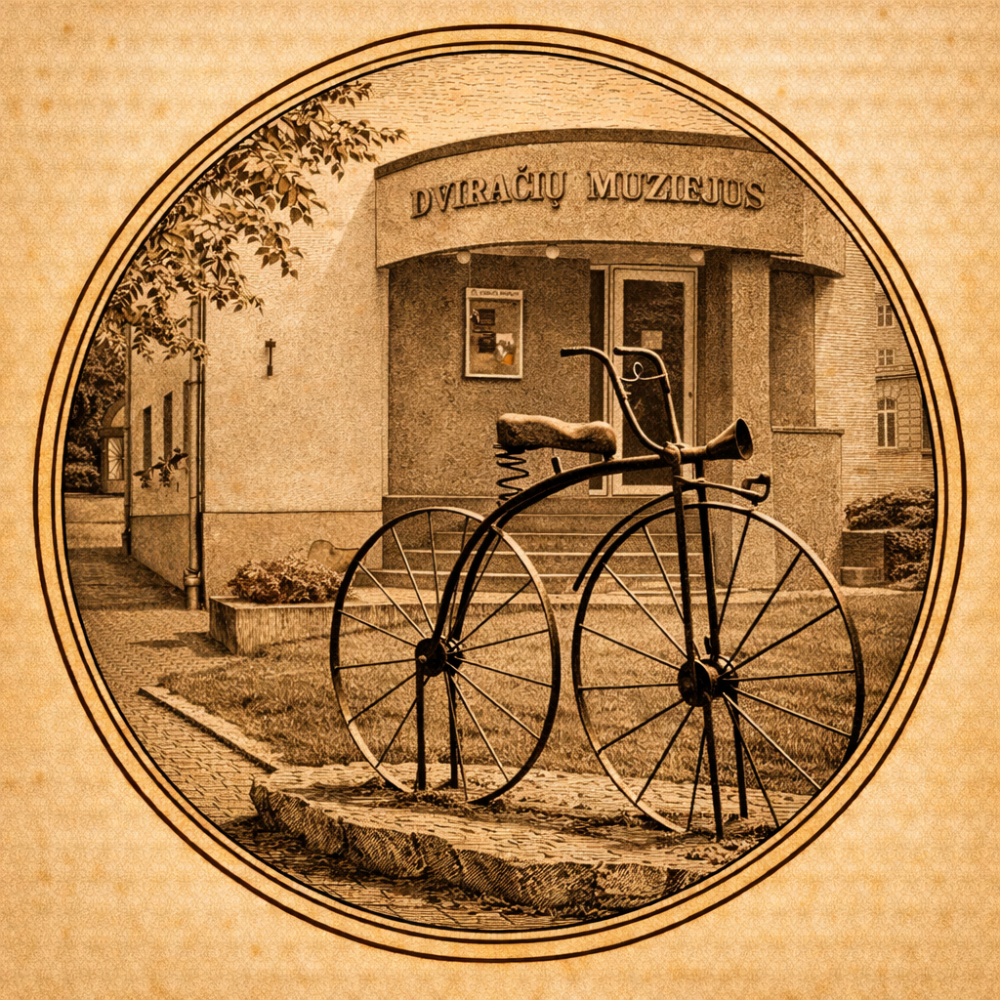
Dviračių muziejus
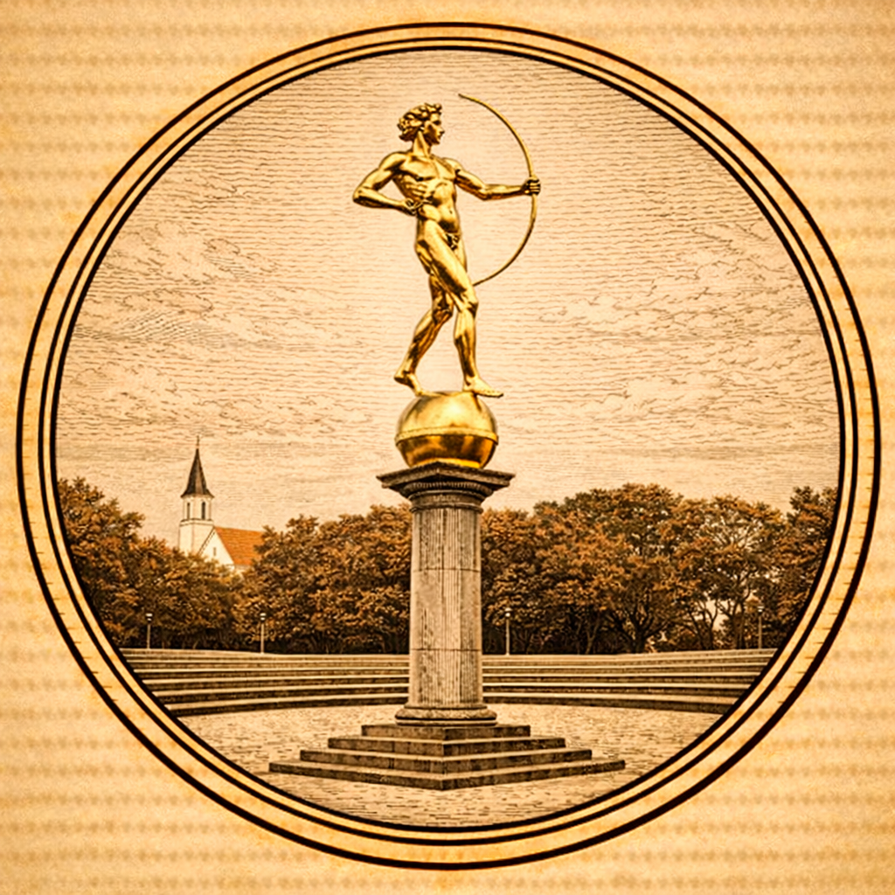
Auksinis berniukas
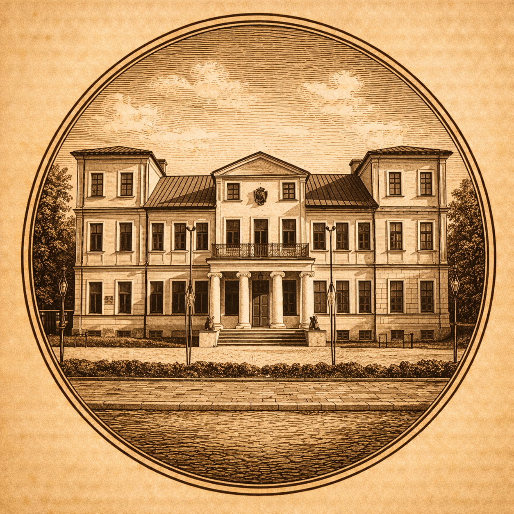
Grafų Zubovų dvaras
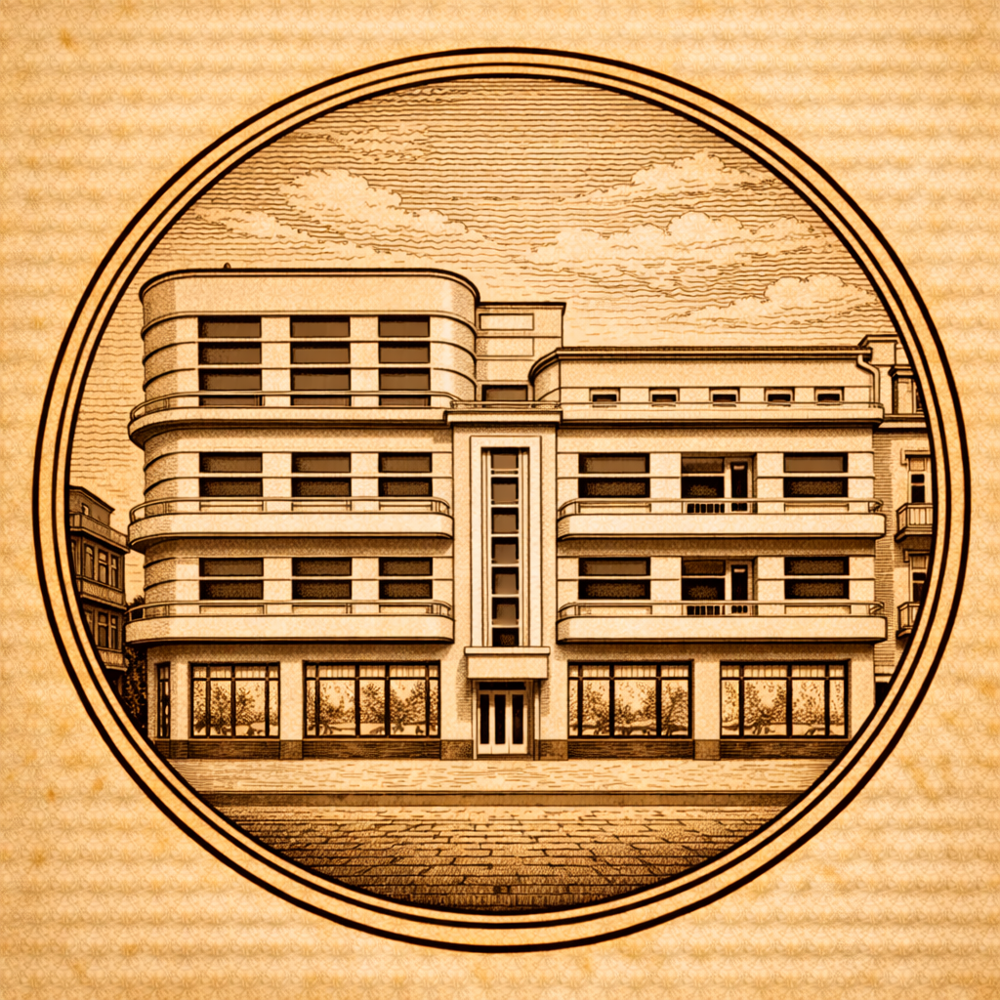
Fotografijos muziejus
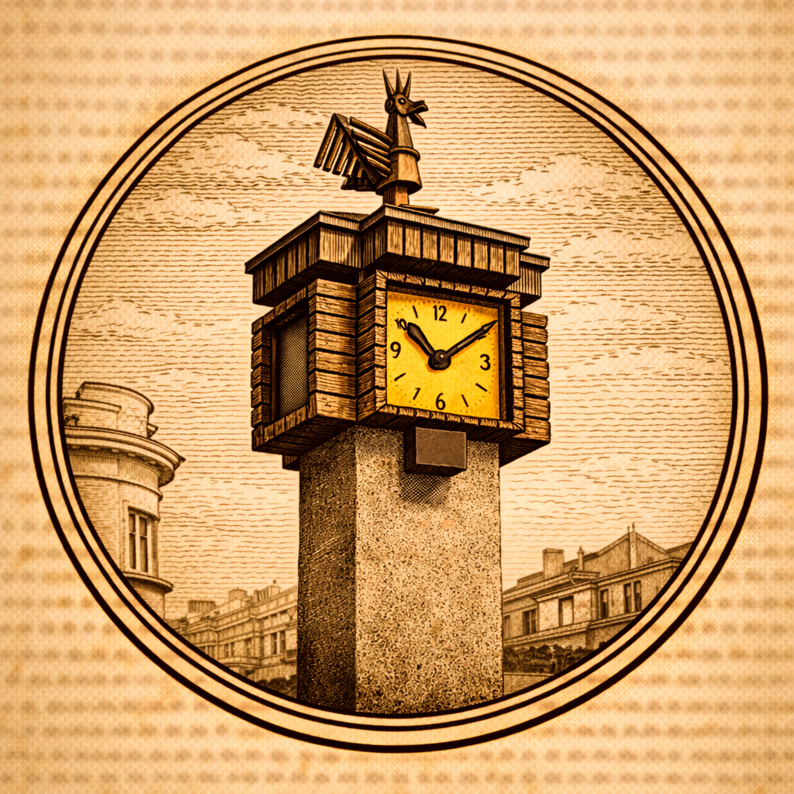